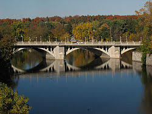

The Rideau River, which is located in Ontario, Canada, is a popular site for many
of the 6.6 million tourists who come to Ontario each year. Later, I will talk about all
the effects of those tourists are doing to the river and and the impact that it has on
the on the biodiversity of the area. For now, let's talk about the ecosystem of the Rideau
River.